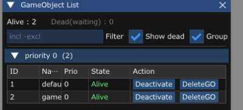

LV2 基礎 ／ 2-06
難易度 ／ 前提 2-05
DeleteGO() を呼んだ瞬間、メモリはどうなっている？ → 答えられないなら 2-05 へ戻るdelete されるのはいつ？ → 同上ゲームを実行すると、画面のいちばん上に黒いメニューバーが出ています。 F1 キーで表示・非表示が切り替わります。

Alive : 2 なので、生きているゲームオブジェクトは2個です。
ウィンドウは ドラッグで移動・端をつまんでサイズ変更できます。
位置は imgui.ini に自動保存されるので、次に起動しても同じ場所に出ます。
| 列 | 意味 |
|---|---|
| ID | インスタンスID。NewGO のときに割り振られる、使い回されない番号。2-09で重要になります |
| Name | NewGO の第2引数で付けた名前 |
| Prio | 優先度。処理順・描画順がこの順番で決まる |
| State | 下の表を参照 |
| Action | その場で Deactivate / DeleteGO を試せるボタン |
| State | 意味 |
|---|---|
| Alive | 普通に動いている |
| Starting | Start() がまだ true を返していない |
| Inactive | Deactivate() されている。Update/Render が呼ばれない |
| DEAD | DeleteGO() 済み。まだメモリは残っている |
パネルの上には、生きている数と削除待ちの数が出ています。
Alive : 128 Dead(waiting) : 3
Dead(waiting) は、「DeleteGO されたけど、まだ本当には消えていない」
オブジェクトの数です。前の章でやった、あのズレの期間にいるオブジェクトです。
前の章で学んだ「死亡予約 → 次のフレームで破棄」を、目で確認します。
GameObject List を開く
速すぎて見えない場合は、Show dead のチェックが入っているか確認してください。
それでも一瞬です。それが正常です。
1フレーム（60分の1秒）しか存在しない状態だからです。
Enemy の Update() に置いて、
F10 で1フレームずつ進めてください。
止めるたびにパネルの表示も更新されます。
1-18 デバッガを使う でやった操作です。
これがこのパネルのいちばんの使いどころです。 わざと消し忘れたコードを書いて、数字が増えていくのを見ます。
void Bullet::Update()
{
m_position.y += m_speed * g_gameTime->GetFrameDeltaTime();
// わざと消し忘れる。画面の外に出ても DeleteGO しない。
// if (m_position.y > 600.0f) {
// DeleteGO(this);
// return;
// }
}
この状態で弾を撃ち続けて、パネルの Alive を見てください。
Alive が増えるFilter に bullet と打つと、弾だけが並んで、その多さが分かる
コメントアウトを戻すと、画面外に出た弾がちゃんと消えて、
Alive が一定のところで落ち着きます。
Update され続けています。
ゲームが重いと感じたら、まず Alive を見てください。
増え続けていたら、それが原因です。
| やりたいこと | やり方 |
|---|---|
| 特定の種類だけ見たい | Filter に名前の一部を打つ（例：enemy） |
| 優先度ごとの数を見たい | Group by prio にチェック。見出しに個数が出る |
| あるオブジェクトだけ動きを止めたい | Deactivate ボタン。消さずに Update だけ止まる |
| 消したときの挙動を試したい | DeleteGO ボタン。コードを書かずに試せる |
Deactivate() されたオブジェクトは Update/Render が止まるだけで、
メモリにはそのまま残り、Activate() で復活できます。
「ポーズ中だけ敵を止めたい」ようなときに使います。
実験2をやって、消し忘れたときと直したときで Alive がどう変わるかを見る。
自機を Deactivate してみる。動かなくなるが、画面からも消えるはず。
なぜ消えるのか、IGameObject の RenderWrapper() を読んで確かめる。
画面からも消えます。理由は IGameObject にあります。
void RenderWrapper(RenderContext& renderContext)
{
if (m_isActive && m_isStart && !m_isDead) { // ← m_isActive を見ている
Render(renderContext);
}
}
Deactivate() は m_isActive を false にします。
UpdateWrapper() と RenderWrapper() の両方が
このフラグを見ているので、動かなくなると同時に、描かれなくもなります。
「動きだけ止めて、絵は出したままにしたい」（ポーズ画面など）場合は、
Deactivate() ではなく自分でフラグを持って
Update() の中身をスキップしてください。
自分のゲームを1分間遊んで、Alive が増え続けていないことを確認する。
増えていたら、どのオブジェクトが残っているかを Filter で特定して直す。
本文には答えがありません。
手順はこうです。
Alive が増え続けていたら、Filter に思い当たる名前を打つ
（bullet、enemy、effect など）Update() に「消える条件」が書いてあるか確認するよくある犯人
| 種類 | 消し忘れの原因 |
|---|---|
| 弾 | 画面外の判定がない／判定の値が広すぎる |
| 敵 | 画面の下に抜けたあと消していない |
| エフェクト | ループ再生になっている |
| サウンド | Play(true) で鳴らして消していない |
増えていなければ、それが正解です。 「問題が無いことを確認できた」も立派な結果です。
Alive が遊んでいるうちに増え続けていたら、何を疑う？Dead(waiting) はどういう状態のオブジェクトの数？Deactivate と DeleteGO の違いは？DeleteGO の消し忘れ。画面から見えなくても動き続けている。DeleteGO されたが、まだ delete されていないもの。
次のフレームの先頭で消える。Deactivate は一時停止（メモリは残り、復活できる）。
DeleteGO は削除（次のフレームで消える）。パネル全体の説明は デバッグGUI と GOHandle にもあります。